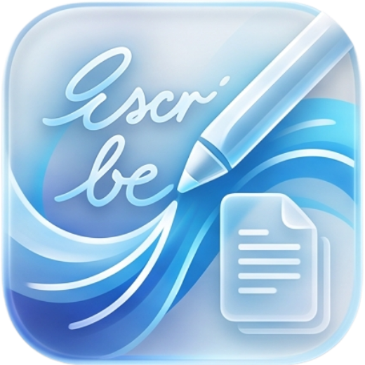
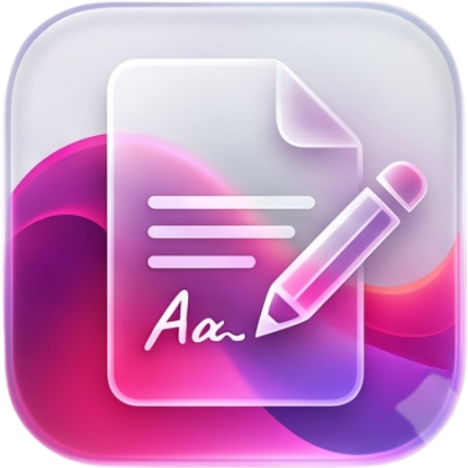

Calcular
Hojas de cálculo con más de 400 funciones, formatos y gráficos de datos.
Abrir ➤
Escribir
Procesador de texto con formato enriquecido, tablas, imágenes y exportación a PDF y Word.
Abrir ➤Presentar
Presentaciones con diapositivas, formas, temas y modo de proyección a pantalla completa.
Abrir ➤
Editar PDF
Visualiza y edita PDF: texto, resaltado, dibujo, páginas, combinación y extracción.
Abrir ➤